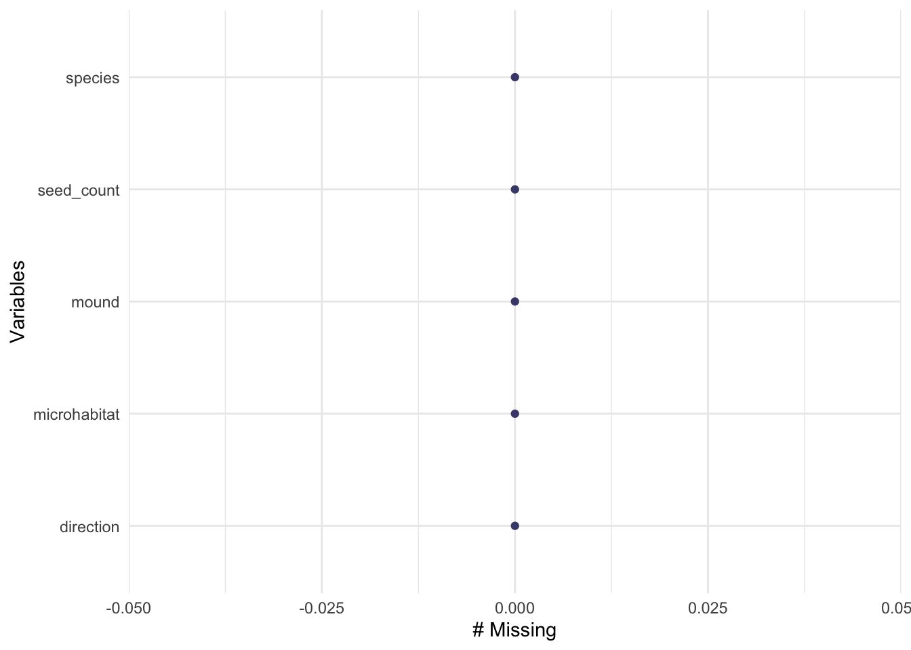
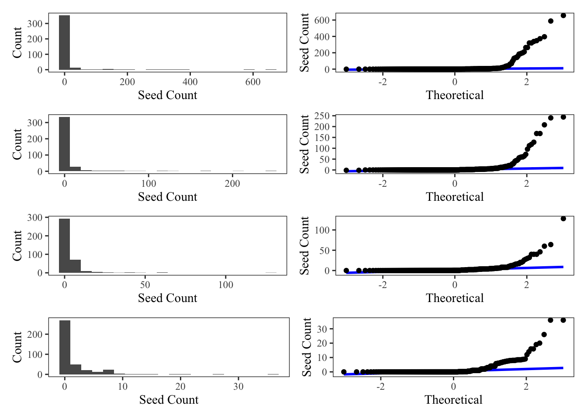
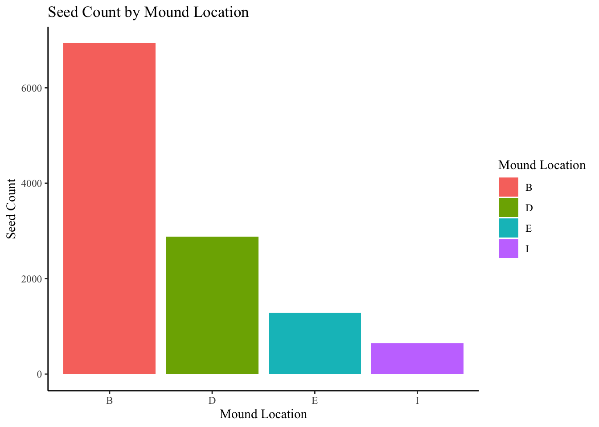

Kangaroo rats are small, mostly nocturnal rodents that are native to western North America in arid areas. The mounds they create can result in the formation of microhabitats that support unique plant communities and local species diversity (Guo 1). This in part is due to the fact that these mounds possess more organic matter to promote plant growth (Davidson and Lightfoot 1). Although there is evidence of more plant growth on these mounds, there is not much data on the composition of the seed bank on kangaroo rat mounds (Moorhead et.al). Therefore this analysis serves to understand how total seed number differs between kangaroo rat mound locations in a Chihuahuan Desert Grassland. We are testing the null hypothesis that seed numbers do not different between kangaroo rat mound locations against the alternative hypothesis that seed numbers do differ between kangaroo rat mound locations.
Methods
The data from the dataset was compiled by conducting an experiment in which 10 kangaroo rat mounds were randomly selected to collect soil samples from. In addition, subsamples were taken from each mound and grouped into 4 main categories: base of the mound (B), one meter from base samples (S), six meters from base samples at the edge of black grama glass clumps (E), and six meters from base samples in the interspace between black grama grass clumps (I). Soil samples were then dried in an oven for 48 hours at 50 C before being sifted using a sieve to capture small seeds. Eight taxa of seeds were targeted: Cryptantha crassisepala, Descurainia pinnata, Phacelia integrifolia, and Plantago patagonica (spring annuals), Astragalus missouriensis, Lesquerella fendleri, and Oenothera species (perrenial forbs that flower in the spring), and Sphaeralacea species (perennail forb that flowers in the fall). To organize these data, the column names were renamed to be more informative using the rename() function.
kangaroo_data <-read_csv(here("data", "kangaroo_mound_data.csv")) %>%# rename columns to be more informativerename(c("mound"="mnd", "direction"="dir", "microhabitat"="loc", "seed_count"="seeds"))
Next, a visualization of the missing data were created which showed there were no missing data.
Code
gg_miss_var(kangaroo_data)

Figure 1: Missing Data. Number of missing data entries on the x-axis and variables on the y-axis. Plots correspond to number of missing data entries for each variable.
To determine whether seed numbers differ between kangaroo rat mound locations an ANOVA test was conducted. First the assumptions for this test were checked including normality and variance.
Code
# create different data frames for each moundmound_B <- kangaroo_data %>%filter(microhabitat =="B")mound_D <- kangaroo_data %>%filter(microhabitat =="D")mound_E <- kangaroo_data %>%filter(microhabitat =="E")mound_I <- kangaroo_data %>%filter(microhabitat =="I")# create histograms for each speciesmound_B_hist <-ggplot(data = mound_B, aes(x = seed_count)) +geom_histogram(bins =20) +labs(x ="Seed Count", y ="Count") +theme_bw() +theme(panel.grid =element_blank(),text =element_text(family ="Times New Roman") )mound_D_hist <-ggplot(data = mound_D, aes(x = seed_count)) +geom_histogram(bins =20) +labs(x ="Seed Count", y ="Count") +theme_bw() +theme(panel.grid =element_blank(),text =element_text(family ="Times New Roman") )mound_E_hist <-ggplot(data = mound_E, aes(x = seed_count)) +geom_histogram(bins =20) +labs(x ="Seed Count", y ="Count") +theme_bw() +theme(panel.grid =element_blank(),text =element_text(family ="Times New Roman") )mound_I_hist <-ggplot(data = mound_I, aes(x = seed_count)) +geom_histogram(bins =20) +labs(x ="Seed Count", y ="Count") +theme_bw() +theme(panel.grid =element_blank(),text =element_text(family ="Times New Roman") )
Code
# create QQ plots for each speciesmound_B_qq <-ggplot(data = mound_B, aes(sample = seed_count)) +stat_qq_line(linewidth =1, color ="blue") +stat_qq() +labs(x ="Theoretical", y ="Seed Count") +theme_bw() +theme(panel.grid =element_blank(),text =element_text(family ="Times New Roman") )mound_D_qq <-ggplot(data = mound_D, aes(sample = seed_count)) +stat_qq_line(linewidth =1, color ="blue") +stat_qq() +labs(x ="Theoretical", y ="Seed Count") +theme_bw() +theme(panel.grid =element_blank(),text =element_text(family ="Times New Roman") )mound_E_qq <-ggplot(data = mound_E, aes(sample = seed_count)) +stat_qq_line(linewidth =1, color ="blue") +stat_qq() +labs(x ="Theoretical", y ="Seed Count") +theme_bw() +theme(panel.grid =element_blank(),text =element_text(family ="Times New Roman") )mound_I_qq <-ggplot(data = mound_I, aes(sample = seed_count)) +stat_qq_line(linewidth =1, color ="blue") +stat_qq() +labs(x ="Theoretical", y ="Seed Count") +theme_bw() +theme(panel.grid =element_blank(),text =element_text(family ="Times New Roman") )# put all the plots together using the "patchwork" feature(mound_B_hist + mound_B_qq) / (mound_D_hist + mound_D_qq) / (mound_E_hist + mound_E_qq) / (mound_I_hist + mound_I_qq)

Figure 2. Visual checks for normality. Histograms of seed counts for each mound location. Bars represent number of seed counts in each bin. QQ plots of seed count. Points in QQ plot represent sample quantiles compared to theoretical quantiles from a normal distribution. Solid blue lines represent a 1:1 relationship between sample and theoretical quantiles.
Code
# shapiro tests to statistically test for normal distributionshapiro.test(mound_B$seed_count)
Shapiro-Wilk normality test
data: mound_B$seed_count
W = 0.27338, p-value < 2.2e-16
Code
shapiro.test(mound_D$seed_count)
Shapiro-Wilk normality test
data: mound_D$seed_count
W = 0.28007, p-value < 2.2e-16
Code
shapiro.test(mound_E$seed_count)
Shapiro-Wilk normality test
data: mound_E$seed_count
W = 0.33868, p-value < 2.2e-16
Code
shapiro.test(mound_I$seed_count)
Shapiro-Wilk normality test
data: mound_I$seed_count
W = 0.45561, p-value < 2.2e-16
Code
# check for equal variancescount_var <-leveneTest(seed_count ~ microhabitat, data = kangaroo_data)count_var
Levene's Test for Homogeneity of Variance (center = median)
Df F value Pr(>F)
group 3 14.474 2.66e-09 ***
1556
---
Signif. codes: 0 '***' 0.001 '**' 0.01 '*' 0.05 '.' 0.1 ' ' 1
Prior to our analysis, we checked assumptions for analysis of variance. We tested for equality of variances between groups using Levene’s test and found statistically significant differences in variances between groups (F(3, 1556) = 14.47, p < 0.0001, a = 0.05). We also visually assessed normality using histograms and QQ plots and statistically tested for normality of seed count using Shapiro-Wilk tests for each mound. All mounds indicated deviations from normality (mound B: W = 0.27, p < 0.0001, mound D: W = 0.28, p < 0.0001, mound E: W = 0.34, p < 0.0001, mound I: W = 0.46, p < 0.0001). Because of this, a Kruskal-Wallis test was run, as it is a non-parametric alternative to the ANOVA that does not need to meet required assumptions.
Code
kruskal.test(seed_count ~ microhabitat, data = kangaroo_data)
Kruskal-Wallis rank sum test
data: seed_count by microhabitat
Kruskal-Wallis chi-squared = 21.932, df = 3, p-value = 6.738e-05
The results of the Kruskal-Wallis test suggest there are significant differences of seed count between mound locations as the p-value is less than the significance level of 0.05. Therefore, the null hypothesis was rejected. To determine which pairs of mound locations differ in seed count, a pairwise wilcox test was conducted.
Code
# conduct a pairwise wilcox test to calculate pairwise comparisons between group levels with corrections for multiple testing; "BH" adjustmentpairwise.wilcox.test(kangaroo_data$seed_count, kangaroo_data$microhabitat, p.adjust.method ="BH")
Pairwise comparisons using Wilcoxon rank sum test with continuity correction
data: kangaroo_data$seed_count and kangaroo_data$microhabitat
B D E
D 0.2740 - -
E 0.2740 0.9000 -
I 4.1e-05 0.0026 0.0026
P value adjustment method: BH
Results
Based on the Kruskal-Wallis test run, we found that total seed number does differ between kangaroo rat mound locations (H(3) = 21.93, p < 0.0001). Pairwise comparisons using the Wilcoxon rank sum test with BH-adjusted p-values was run to compare the total seed counts between mound locations. This revealed that total seed count only differs between B and I (p < 0.0001), D and I ( p = 0.0026), and E and I mound locations (p = 0.0026), where B = base of kangaroo rat mound on mound, I = interspace between black grama grass clumps off mound, D = surrounding area of kangaroo rat mound on mound, and E = edge of black grama grass clumps off mound.
Code
# create visualization to show differing seed counts by mound locationggplot(data = kangaroo_data, aes(x = microhabitat,y = seed_count)) +# make each bar a different color to differentiate between mound locationsgeom_bar(stat ="identity", aes(fill = microhabitat)) +# change legend titlescale_fill_discrete(name ="Mound Location") +theme_classic() +labs (x ="Mound Location", y ="Seed Count", title ="Seed Count by Mound Location") +theme(text =element_text(family ="Times New Roman") )

Figure 3. Seed Count across Mound Locations. Mound location on x-axis and seed count on y-axis. Each mound location is represented with a different color where B (base of mound) is red, D (surrounding area) is green, E (edge of black grama grass clumps) is blue, and I (interspace between black grama glass clumps) is purple. Heights of bars represent total seed count at each location.
The above figure displays how seed count does vary across mound locations, specifically between B and I, D and I, as well as E and I.
Problem 2
Introduction
shrubification, increase in woody shrub that changes the composition of an ecosystem, due to climate change induced alterations in precipitation, temperature, and soil moisture, more establishment and colonization of woody shrubs to create an alpine ecosystem[4] -how will plant reproduction be affected by this, which will increase seed distribution and is this a determining factor for plant reproductive success
plants will respond to environmental change through quanitity and quality of their seed provision, can change the structure and thickness of seet coat which influence the endosperm and provisions that the embryo has access to [5]
studies conducted suggest that parental temperature significantly determines seed coat and seed mass but not embryo mass
amount of seeds created increases genetic variety in the population and increased survival [5]
individual plant would reach maximum fitness by producing an infinite number of seeds, is a determining factor in the success of seedling establishment in an environment
Works Cited
Davidson, A.D., and D.C. Lightfoot. “Burrowing Rodents Increase Landscape Heterogeneity in a Desert Grassland.” Journal of Arid Environments, vol. 72, no. 7, 2008, pp. 1133–1145, https://doi.org/10.1016/j.jaridenv.2007.12.015.
Guo, Qinfeng. “Effects of Bannertail Kangaroo Rat Mounds on Small-Scale Plant Community Structure.” Oecologia, vol. 106, no. 2, 1996, pp. 247–256, https://doi.org/10.1007/bf00328605.
Moorhead, D. L., et al. “Cover of Spring Annuals on Nitrogen-Rich Kangaroo Rat Mounds in a Chihuahuan Desert Grassland.” American Midland Naturalist, vol. 120, no. 2, 1988, p. 443, https://doi.org/10.2307/2426018.
[4] actual paper [5]Phenotypic plasticity for plant development, function and life history [6] https://bsapubs.onlinelibrary.wiley.com/doi/epdf/10.2307/2446624?src=getftr [7] https://www.annualreviews.org/doi/pdf/10.1146/annurev.es.18.110187.002205